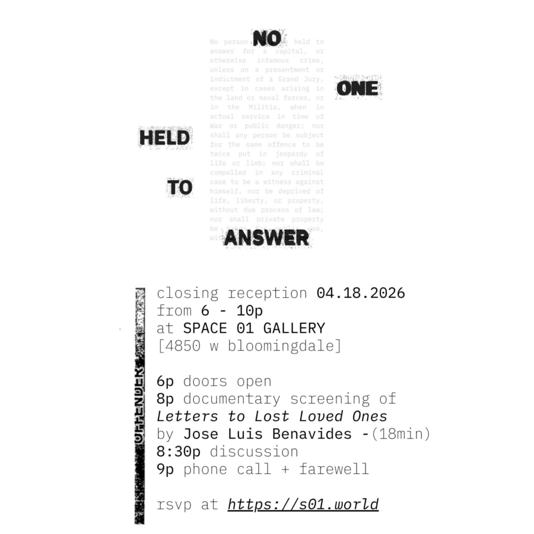

No One Held To Answer – Documentary Screening + Closing Reception
Who do we hold accountable for war, genocide, and government-enacted violence? ’No One Held To Answer’ is a group exhibition and fundraiser curated with the support of Chicago Torture Justice Memorials Foundation. The closing reception will feature an 8pm screening of Letters to Lost Loved Ones, a documentary short by Jose Luis Benavides that traces nine incarcerated individuals’ experiences of the COVID-19 lockdown, untimely deaths, and institutional neglect. Artists featured: Yazan Alali Jose Luis Benavides Reginald BoClair Dorothy Burge Robert Curry Da-Shuang Darrell Fair Stanley Howard Renaldo Hudson Leslie C Luis Rafael Galvez Mikayla Hernandez Guevara Lena Linh Lê Eso Malflor Mira Lee Nah Elaina Porcaro Jassiel Serna Julieta Sosa James Soto Michael Sullivan Learn more about Chicago Torture Justice Memorials Foundation here: https://ctjmfoundation.org/ Donate to the foundation: https://ctjmf.square.site/product/CTJMFdonate/1 Donate to SPACE 01 to help keep black-owned art spaces alive and expand our programming: https://fundraising.fracturedatlas.org/space-01